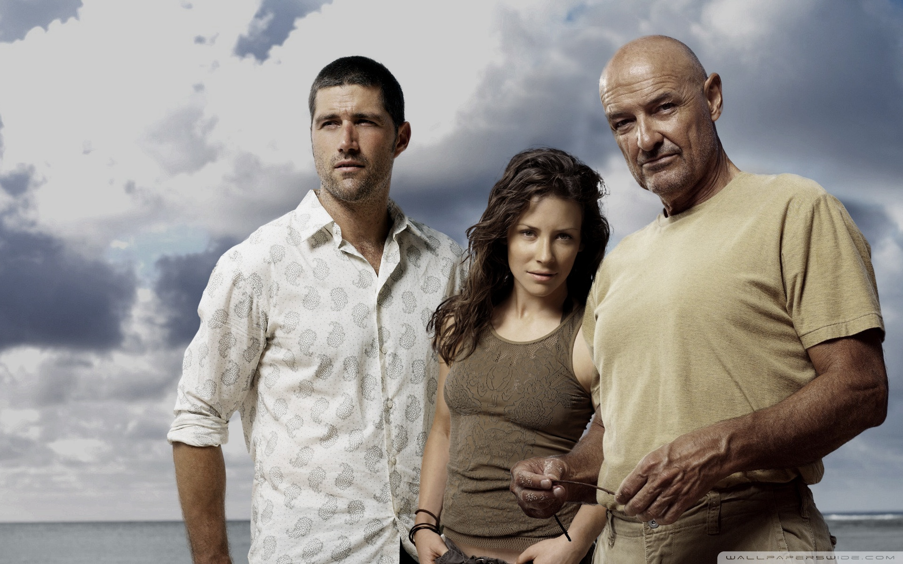

Мои любимые сериалы
Здесь представлены три сериала из части любимых, оставивших большое впечатление от просмотра.
Метод

Родион Меглин — загадочная и неординарная личность, следователь высочайшего уровня, который раскрывает самые сложные убийства. Он привык работать в одиночку, не раскрывая секреты своего метода. Выпускница юрфака Есеня становится стажером Меглина. У девушки есть личные мотивы для работы с прославленным следователем — мать Есени убили, а отец скрывает важные детали произошедшего, но она не оставляет надежды выйти на след убийцы.
Подробнее
Lost

Красавец-лайнер, совершающий полет из Сиднея в Лос-Анджелес, неожиданно терпит крушение. 48 пассажиров оказываются на пустынном острове посреди океана. Люди в панике. Надежда быть найденными довольно призрачна. Поэтому остается только одно: собраться с силами и постараться выжить на острове, начиненном множеством опасностей...
Подробнее
Острые козырьки
Британский сериал о криминальном мире Бирмингема 20-х годов прошлого века, в котором многолюдная семья Шелби стала одной из самых жестоких и влиятельных гангстерских банд послевоенного времени. Фирменным знаком группировки, промышлявшей грабежами и азартными играми, стали зашитые в козырьки лезвия.
Подробнее